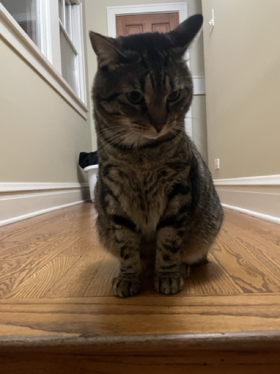
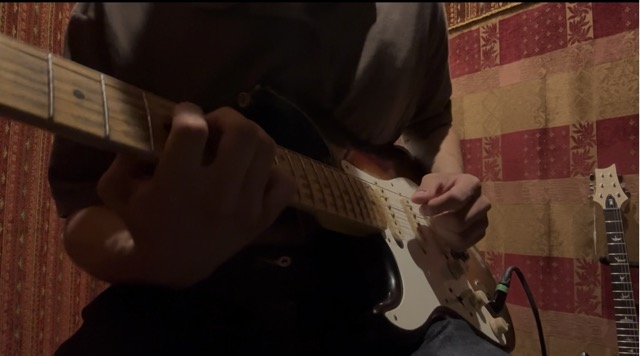

Review surface — proposed content for the About section on your site (dark background, Instrument Serif headings, Inter standing in for General Sans since it isn't on an allowed font CDN). "Band 2" / "Band 3" are just internal labels from your About.jsx code for the two blocks below — they won't appear on the live site. Nothing here is live code yet — annotate anything you want changed. When you're done, send feedback and I'll wire it into aboutData.js and About.jsx.
Band 2 — internal code label, not shown on site
Photo board
Round 6 — captions moved inside the frame, Polaroid-style (handwriting font), so they rotate as one piece with the photo instead of sitting in flow below it where the tilted corner could overhang them.
El Hato Verde, Antigua, Guatemala
Tatiana
Lake Atitlán, Guatemala

Tyson

Chicago Music Exchange
Band 3 — internal code label, not shown on site
Facts
Sudoku rankingGrandmaster · Top 1% best time
GuitarPRS SE Custom 24
ProgramsMLT Career Prep Fellow · Capital One First Gen Focus
WatchingGravity Falls
FavoritesBetter Call Saul · Star Wars: A New Hope · Spider-Man 2 · Rain Man · Forrest Gump
Parked for later, not building now: the expandable "click stack"/cookbook component from React Bits. I'll add a TODO.md at the project root to track this and future ideas so it doesn't get lost — let me know if you'd rather it live somewhere else.
Cooking / favorite food — reply with the dish (and say if you want one of your cooking photos added to the board above) and I'll wire both in.